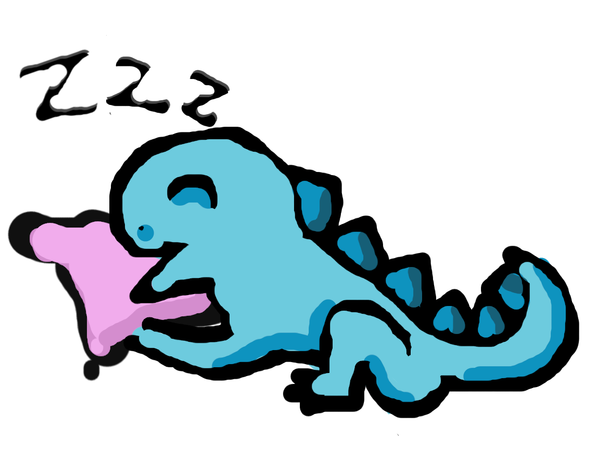

This dyno* might be sleeping!

Please be patient after the redirection for 6-7 seconds you may need to wait.
If you'd face a blank page: worry not! It will turn into something very nice soon^^.
Please be patient after the redirection for 6-7 seconds you may need to wait.
If you'd face a blank page: worry not! It will turn into something very nice soon^^.